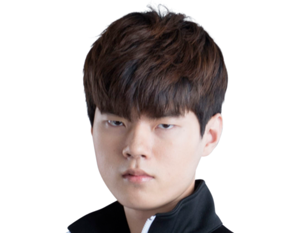

DEFT

現 kt 롤스터, 前 EDG, 삼성 갤럭시 블루의 원거리 딜러 담당. 뛰어난 실력과 미친
피지컬을 보유한 삼성 블루의 미친 고딩 3인방 중 하나였다. 말 그대로 미친 고딩의
면모를 제대로 발휘해 형제 팀의 임프와 더불어 원딜 명가 삼성이라는 평가를 이끌어냈다.
자존심 강한 임프도 데프트만은 자기 이상으로 인정해주며 데프트도 임프를 늘 고평가하는 훈훈한 경쟁 관계.
2014년 솔랭 1, 2위 모두에 자신의 계정을 올리는 모습을 보이기도 하였고, 2014 스프링 시즌
롤챔스와 롤 마스터즈에서 모두 우승하며 선수들 사이에서도 이견이 없는 시즌 4 최고의 원딜 중 한명이었다.
이후 중국으로 가 2년간 중국리그 2회 우승, 1회 준우승에 MSI 우승이란 타이틀을 세우고 귀국했다.
비록 중국에서의 인기는 중국인 최고 원딜인 우지는 물론 임프에도[10] 미치지 못했지만 2년간 중국
최고의 원딜자리를 유지하고 있었음은 커리어만 봐도 알 수 있다. 그리고 2년만에 한국으로 귀국, KT에 입단했다.
중국으로 가기 전 단점으론 상대적으로 약한 라인전과 멘탈이 뽑혔지만 이를 피지컬로 커버하고도
남을만한 실력을 가진 게 장점. 도주기가 없는 챔피언으로도 적의 스킬들을 휙휙 피해버리는
미친 무빙과 원거리 딜러의 극한에 다다랐다고 해도 좋을 끝판왕급 딜링 능력이 데프트를 대표하는 능력치